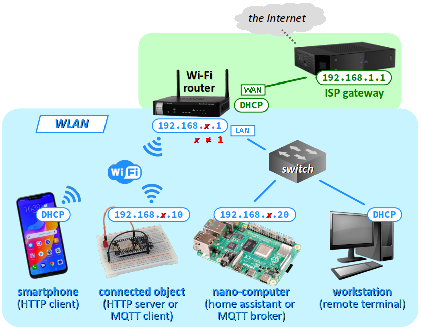
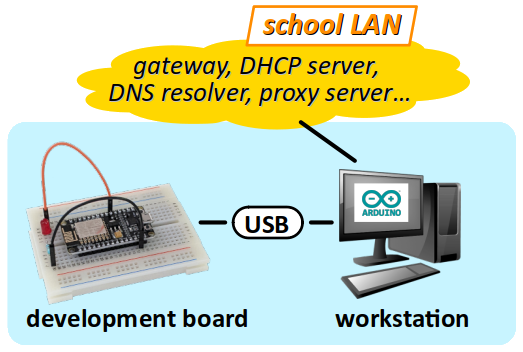
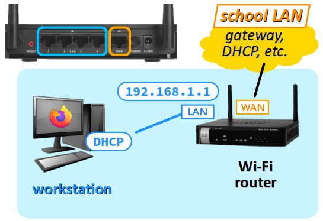
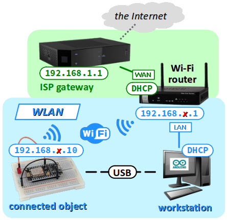
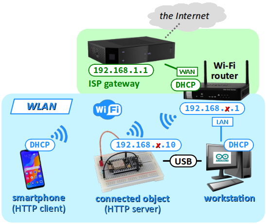
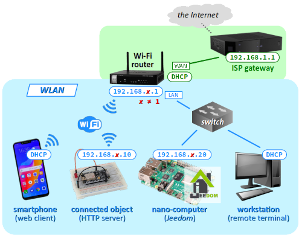
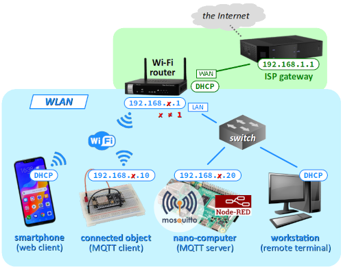

Objectifs pédagogiques
L'objectif principal de ce sujet de travaux pratiques est découvrir les bases de l'IoT (Internet of things – cf. cours, chap. R3‑V ).
On expérimente un objet connecté démonstrateur constitué d'une simple led commandée par un microcontrôleur à SoC Wi‑Fi. Avec ce système, on doit pouvoir :
- connaître l'état de la led en temps‑réel (accès au système en « lecture ») ;
- la piloter en tout‑ou‑rien (accès au système en « écriture ») ;
et ce à distance sur une page web – autrement dit via n'importe quel client HTTP connecté au réseau (poste de travail, smartphone, etc.).
Dans la continuité des choix technologiques de ce module de formation, on opte pour une implémentation du micrologiciel de commande codée en C++ dans l'environnement Arduino. Quant aux pages web de pilotage des objets, on se propose de les implémenter de diverses façons :
- par des fichiers embarqués HTML et CSS interfacées avec le micrologiciel via des fonctions de callback codées en JavaScript ;
- par des solutions « low code » comme Jeedom ou Node‑RED (cf. cours ).
Ce thème et la progression proposée s'inspirent en grande partie d'une série de vidéos didactiques Y publiées par Éric Peronnin, professeur au département GEII de l'IUT de Nantes.
Un objectif secondaire est d'exploiter un routeur Wi‑Fi dont la phase de configuration s'appuie sur les connaissances acquises avec le logiciel Cisco Packet Tracer dans le sujet de TP R3‑1 .
Pour traiter ces exercices, il est recommandé d'avoir étudié les chapitres R3‑IV et R3‑V du cours. Des renvois aux principaux éléments de cours ou à des pages web d'information générale sont donnés au fur et à mesure des questions.
Mise en situation
Environnement
Les manipulations demandées sont à accomplir sur un réseau local (LAN) utilisant la pile de protocole TCP/IP, raccordé à l'Internet
Attention ! Le traitement des exercices nº 8 & 9 requiert un accès à l'Internet avec un serveur proxy académique transparent. Si tel n'est pas le cas, on peut rencontrer des problèmes d'accès à divers composants logiciels des applications Jeedom et Node‑RED.
En conséquence, par souci d'uniformité, les figures topologiques des exercices nº 4 à 7 ci‑dessous sont représentées avec un accès à l'Internet via une box FAI. Néanmoins, ces exercices peuvent en principe être traités via un réseau pédagogique avec un serveur proxy transparent.
Équipement
- Un routeur Wi‑Fi – par exemple, le Cisco RV215W en photo ci‑contre – créera un WLAN avec un point d'accès sans‑fil pour l'objet connecté et pour tout smartphone permettant de contrôler l'objet à distance.
- Une carte à microcontrôleur à SoC Wi‑Fi – par exemple, la SBC‑NodeMCU (cf. chap. C1‑III ) en photo ci‑contre – constituera la carte électronique de l'objet connecté. Son micrologiciel (programme utilisateur) pourra embarquer un serveur web.
- Une platine d'expérimentation (breadboard) équipée d'une led rouge, d'une résistance de limitation de courant (typiquement 220 Ω), et de deux fils de raccordement à la carte (jumpers), câblés conformément à la figure ci‑contre, prototypera la partie opérative du système.
- Un nano‑ordinateur Raspberry Pi jouera le rôle de box domotique (exercice 8) puis de broker MQTT (exercice 9). Dans les deux cas, il est préférable qu'un système d'exploitation Raspberry Pi OS lite (sans bureau) soit déjà installé avec l'accès
sshactivé pour permettre le contrôle par un terminal de commandes en ligne sur le poste de travail (cf. sujet de TP R2‑2 ). - Un poste de travail (typiquement, un PC) servira de terminal de programmation et d'interface de commande de l'objet.
- Éventuellement, un smartphone sera utile pour montrer la possibilité de contrôle de l'objet connecté par un autre client HTTP raccordé au réseau local.
Pour programmer la carte à microcontrôleur, d'autres environnements de développement comme Visual Studio Code ou Community peuvent convenir. Il suffit alors d'adapter les consignes de TP.

L'architecture de réseau à constituer doit donc être conforme à la figure ci‑dessous.
Mais dans un premier temps, le poste de travail doit être raccordé au LAN et disposer d'un accès à l'Internet pour pouvoir configurer le routeur.
Travail demandé
Effectuer toutes les manipulations demandées en veillant au respect des consignes, bien dans l'ordre et sans oublier d'étape. En cas de doute sur un branchement ou une manipulation, ne pas hésiter à solliciter l'enseignant. Au fur et à mesure, penser à sauvegarder les modifications apportées aux programmes.
- Préparation du poste de travail et de l'objet connecté 
- Réaliser le montage de la partie opérative de l'objet connecté conformément à la figure supra avec la led rouge connectée à la broche
D7de la carte. - Sur le poste de travail, lancer l'application Arduino IDE. Procéder à l'installation des cartes à SoC ESP8266 si elles ne font pas encore partie de la liste de celles qui sont déjà reconnues par l'application, en suivant la procédure indiquée au chap. C1‑III .
- Créer un nouveau croquis nommé
nodemcuTest.inoet coder un programme qui fait clignoter la led du montage (cf. chap. C2‑VIII C). - En consultant le plan de brochage de la carte (cf. le lien donné au chap. C1‑III C), déterminer le numéro de la broche du port numérique de la carte à coder dans le programme de clignotement.
- Téléverser le programme et vérifier sa bonne exécution.
- Modifier le code source pour vérifier que le moniteur série est opérationnel, en réglant la vitesse de transmission à 115200 baud (cf. chap. C3‑X C). Faire afficher la version du compilateur C++ utilisée par l'IDE (cf. chap. C1‑III C).
- Prise en main et configuration du routeur
- Configurer le poste de travail en client DHCP (cf. chap. R2‑II ) et supprimer tout recours à un proxy server (serveur mandataire). 
- En laissant le routeur hors tension, avec des câbles Ethernet, relier l'une des prises RJ45 de son port LAN au poste de travail pour que ce dernier joue dans un premier temps le rôle de terminal de configuration.
- Mettre le routeur sous tension et :
- attendre l'achèvement de son démarrage – c'est‑à‑dire jusqu'à ce que sa led ⏻ ne clignote plus ;
- avec une pointe de jumper ou un trombone, appuyer au moins 10 secondes sur le bouton
Reset; sa led ⏻ clignote durant toute la procédure de réinitialisation. - Sur le poste de travail, avec un logiciel navigateur, se connecter à l'URL
http://192.168.1.1puis, sans tenir compte de l'avertissement de sécurité, accéder à la page web de connexion au routeur avec les identifiants par défaut (login/mot de passe)cisco/cisco(tout en minuscules). - Annuler la procédure de démarrage rapide et procéder au paramétrage du routeur. Pour plus de détails, on pourra se référer à la notice de l'équipement – cf. le lien suivant .
- Donner au routeur le nouveau mot de passe proposé par votre enseignant. Avec identifiant associé, le noter dans un fichier pour le retrouver en cas d'oubli ultérieur.
- Dans le menu
NetWorking/LAN, donner à l'interface réseau du LAN du routeur une configuration IP non conflictuelle avec celle de la passerelle du futur réseau auquel le routeur sera raccordé sur son port WAN (typiquement,192.168.x.1/24avec x ≠ 1 si l'adresse de la passerelle sur le WAN est192.168.1.1/24). Par exemple, on prendra x = 10, 20, 30… (demander à l'enseignant la valeur de x à choisir). - Dans le menu
Wireless, cocher la case du premier réseau de la table, cliquer sur le boutonEditet lui donner l'identifiant (SSID name)ciscoWAPxavec x = 10, 20, 30… (comme pour les adresses IP ci‑dessus) pour différentier chaque point d'accès mis en œuvre dans la salle de TP. Cliquer sur le boutonSave. - laisser le mode de sécurité par défaut, c'est‑à‑dire WPA2 Personal - TKIP/AES ;
- saisir la clef de sécurité – c'est‑à‑dire le mot de passe pour l'accès au réseau sans‑fil – proposé par votre enseignant. Avec l'identifiant associé, le noter dans un fichier pour le retrouver en cas d'oubli ultérieur.
- Dans le menu
Administration/Time Settings, choisir le fuseau horaire de la France. Activer l'option DST (daylight saving time) et renseigner les dates de passage de l'heure d'été et de l'heure d'hiver (cf. chap. R2‑VI ). Cliquer sur le boutonSave. - Une fois la configuration du routeur terminée, si cela n'est pas déjà fait, raccorder le routeur par sa prise WAN au réseau donnant accès à l'Internet (réseau pédagogique ou box de FAI pour s'affranchir de tout serveur proxy).
- accès à l'Internet depuis le poste de travail ;
- détection et connexion au réseau sans‑fil par un smartphone.
- Programme de connexion sans‑fil de l'objet au réseau 
- Télécharger le dossier d'archive du code source du programme au lien suivant , le décompresser et ouvrir le fichier principal
.inoavec le logiciel Arduino IDE. - Apporter au code source les adaptations suivantes :
- Dans le fichier
connectionID.h, modifier les identifiants de connexion au réseau Wi‑Fi – SSID et mot de passe – pour qu'ils soient conformes au paramétrage du point d'accès opéré précédemment sur le routeur. - Dans le fichier
setupUtilities.h, modifier les adresses IP de la configuration statique conformément au paramétrage du WLAN mis en place. - Procéder au téléversement du programme dans la carte. Une fois l'opération achevée, procéder au vérifications suivantes.
- La led intégrée de la carte doit s'allumer et s'éteindre selon que la fonctionnalité Wi‑Fi est active ou non sur le routeur. Cette fonctionnalité est contrôlable par appuis longs sur le bouton lumineux
On/Offsur la face avant. - L'affichage sur le moniteur série doit confirmer la connexion de l'objet au réseau local via le point d'accès fourni par le routeur et indiquer les adresses IP de sa configuration. La force du signal (cf. chap. R3‑IV ) est‑elle satisfaisante ?
- Lors d'une déconnexion, décoder le code numérique de la cause indiquée sur le moniteur série .
- L'objet connecté doit répondre à une commande
pingémise par le poste de travail. - Programme de serveur web rudimentaire 
- Télécharger le dossier d'archive du code source au lien suivant , le décompresser et ouvrir le fichier principal
.inoavec le logiciel Arduino IDE. - Écraser les fichiers
connectionID.hetsetupUtilities.havec ceux de l'exercice 3 pour utiliser les mêmes identifiants de connexion et la même configuration IP de la carte. - Procéder au téléversement du programme dans la carte. Une fois l'opération achevée, vérifier le bon fonctionnement du serveur web de la manière suivante en utilisant un navigateur s'exécutant sur le poste de travail et sur un smartphone connecté au WLAN.
- Dans la barre d'adresse du navigateur, saisir l'URL :
http://adresse IP carte ESP8266
et constater que s'affiche alors une page web presque vide, avec pour titre « Web server main page ». - Dans la barre d'adresse, ajouter à l'URL le segment
led_on. Vérifier alors que la led rouge s'allume et que la page web affichée confirme cet état avec le titre « LED on ». - Procéder de même pour vérifier que la led rouge s'éteint en ajoutant le segment
led_offà l'URL de la page principale, avec confirmation par affichage du titre « LED off ». - Dans le code source, quel appel de fonction permet d'afficher l'état de la led dans le navigateur ? Comment s'appelle l'action qu'effectue cette fonction et que signifie la valeur de son premier argument ? (cf. chap. R2‑III )
- Programme de page web interactive
- Télécharger le dossier d'archive du code source au lien suivant , le décompresser et ouvrir le fichier principal
.inoavec le logiciel Arduino IDE. - Comme précédemment, écraser les fichiers
connectionID.hetsetupUtilities.havec ceux de l'exercice 3 pour utiliser les mêmes identifiants de connexion et la même configuration IP de la carte. - Procéder au téléversement du programme dans la carte. Une fois l'opération achevée, tester son exécution via la page web de l'objet connecté, en cliquant sur les boutons
ONetOFF. - * Dans le code source :
- Comment la page web est‑elle stockée ?
- Quel appel de fonction permet d'afficher la page web ?
- Comment un appui sur un bouton est‑il traité ?
- Comment l'état de la led est‑il affiché dans la page ?
- Programme de page web dynamique
- Télécharger le dossier d'archive du code source au lien suivant , le décompresser et ouvrir le fichier principal
.inoavec le logiciel Arduino IDE. - Comme précédemment, écraser les fichiers
connectionID.hetsetupUtilities.havec ceux de l'exercice 3 pour utiliser les mêmes identifiants de connexion et la même configuration IP de la carte. - Procéder au téléversement du programme dans la carte. Une fois l'opération achevée, tester son exécution dans la page web de l'objet connecté, en cliquant sur les boutons
ONetOFF. - * Dans le code source, par rapport au programme de l'exercice précédent, qu'est‑ce qui a changé pour les fonctions de callback du serveur web W pour allumer et éteindre la led ?
- Programme de page web responsive
- Télécharger le dossier d'archive du code source au lien suivant , le décompresser et ouvrir le fichier
.inoavec le logiciel Arduino IDE. - Comme précédemment, écraser les fichiers
connectionID.hetsetupUtilities.havec ceux de l'exercice 3 pour utiliser les mêmes identifiants de connexion et la même configuration IP de la carte. - Procéder au téléversement du programme dans la carte. Une fois l'opération achevée, tester son exécution dans la page web de l'objet connecté, en cliquant sur les boutons
ONetOFF. - Observer attentivement la page web de l'objet connecté, sur le smartphone et sur le poste de travail. L'affichage est adaptatif ?
- En analysant le code source, comment la mise en forme de la page web est‑elle implémentée ?
- Programme de page web avec API 
- Télécharger le dossier d'archive du code source au lien suivant , le décompresser et ouvrir le fichier
.inoavec le logiciel Arduino IDE. - Comme précédemment, écraser les fichiers
connectionID.hetsetupUtilities.havec ceux de l'exercice 3 pour utiliser les mêmes identifiants de connexion et la même configuration IP de la carte. - Procéder au téléversement du programme dans la carte. Une fois l'opération achevée, vérifier que la carte est bien connectée au réseau Wi‑Fi.
- Raccorder une box Jeedom au port LAN du routeur.
- Une fois la box Jeedom mise en service, exécuter les étapes suivantes.
- Installer et activer le plugin Script (gratuit).
- Dans le menu Plugins/Programmation/Script, ajouter un nouveau script ; l'associer à un objet défini dans la box (par exemple,
Maison). Dans l'ongletÉquipement, cocher les casesActiveretVisible. - Dans l'onglet
Commandes, ajouter : - deux commandes
HTTPde typeAction, nomméesONetOFFpour respectivement allumer et éteindre la led ; - une commande
HTTPde typeInfo, nomméeSTATEpour afficher l'état de la led. - Vérifier le bon fonctionnement de ces commandes directement dans la page de script, puis dans le
Dashboardde l'application Jeedom. - Contrôle à distance de la led par protocole MQTT et interface Node‑RED 
- Télécharger le dossier d'archive du code source au lien suivant , le décompresser et ouvrir le fichier source
.inoavec le logiciel Arduino IDE. - Comme aux exercices précédents, coder les adaptations nécessaires au code source (identifiants de connexion Wi‑Fi, configuration IP statique) pour permettre la connexion sans‑fil de l'objet dans le WLAN.
- Installer le module de bibliothèque Arduino nommée
PubSubClient(cf. chap. C4‑VI C). Procéder au téléversement du programme dans la carte. - Mettre en service une carte Raspberry Pi avec un système sans bureau et une configuration IP statique (cf. chap. R1‑III ) conforme aux spécifications de la figure ci‑dessus. La raccorder au WLAN sur le routeur avec un câble Ethernet au switch du port LAN.
- Sur la carte Raspberry Pi, installer les paquets
mosquittoetmosquitto clients(cf. chap. R3‑V ). Puis, comme indiqué dans le cours, paramétrer l'application broker et redémarrer le système. - Dans le terminal de commande en ligne de la carte Raspberry Pi, saisir la commande d'abonnement :
- Via la session
sshsur la carte Raspberry Pi, installer l'application de développement Node‑RED (cf. cours, chap. R3‑V ). - Démarrer l'application (commande
node-red-start) et dans un navigateur sur le poste de travail, se connecter à l'adresse IP du broker sur le port 1880 pour afficher la page web d'interface de développement. - Dans la fenêtre de développement de Node‑RED (onglet
Flow 1par défaut), créer les nœuds suivants et les liaisons entre eux pour afficher l'état de la led. - Créer un nœud
mqtt in(palette network), un nœudtext(palette dashboard) et les relier entre‑eux, conformément à la capture d'écran ci‑contre. - Paramétrer le nœud
mqtt inen renseignant pour l'adresse IP du broker la valeurlocalhost(puisque Node‑RED est installé sur la même machine) et le nom du topic de l'état de la led (cf. question 9.d supra). - Paramétrer le nœud
texten créant au passage un groupe (ui_group) nomméeNodeMCUet dans cette zone, un block (tab) nomméLED. - Cliquer sur le bouton
Deployet vérifier la page web d'interface utilisateur en ouvrant dans le navigateur un nouvel onglet avec l'URL :
http://adresse IP broker:1880/ui
On doit obtenir un résultat conforme à la capture d'écran ci‑contre. - Dans la fenêtre de développement de Node‑RED, créer maintenant les nœuds suivants et les liaisons entre eux pour commander la led.
- Créer un nœud
switch(palette dashboard), un nœudmqtt out(palette network) et les relier entre‑eux, conformément à la capture d'écran ci‑contre. - Paramétrer le nœud
switchen saisissant les chaînes de caractères (string) à envoyer commeOn PayloadetOff Payloadrespectivement pour allumer et éteindre la led – cf. le code source de la fonctionmqttCallbackdans le programme de la carte NodeMCU. - Paramétrer le nœud
mqtt outen renseignant le broker (localhost) et le topic de commande de la led (cf. question 9.d supra). - Cliquer sur le bouton
Deployet vérifier le résultat en ouvrant la page web d'interface utilisateur. On doit normalement obtenir un résultat conforme à la capture d'écran ci‑contre. - Tester maintenant le fonctionnement de l'interface : allumer et éteindre la led avec le switch.
- On souhaite afficher un diagramme d'historique des valeurs d'état de la led dans l'heure en cours. Pour cela, sur la fenêtre de développement, ajouter un nœud
chartet relier son entrée à la sortie du nœudmqtt_in, conformément à la conformément à la capture d'écran ci‑contre. - On souhaite enregistrer un fichier d'historique des valeurs d'état de la led dans la journée en cours, enregistrées au format
csvW (comma‑separated values). Pour cela, sur la fenêtre de développement, effectuer les tâches suivantes. - Créer un nœud
trigger(palette function) et un nœuddebug(palette function) et les relier en chaîne à la sortie du nœudmqtt_in, conformément à la figure ci‑contre. - De la même manière, créer une séquence de nœuds
triggeretdebugpour récupérer la valeur du message issu du nœudmqtt_in(existing msg objet). - Copier‑coller la structure des 6 nœuds précédemment crées et apporter les modifications nécessaires pour récupérer la valeur d'état
0de la led, précédée de l'heure courante lors de cet événement. - Supprimer les nœuds
debugpuis ajouter un nœudjoin(palette function) ainsi qu'un nœudwrite file(palette storage). Les relier conformément à la capture d'écran ci‑contre. - Chercher une solution pour afficher sur la page d'interface non pas
0/1mais le texteOff/Onpour l'état de la led sur la page d'interface.
Outils/Type de carte, sélectionner alors NodeMCU 0.9 (ESP-12 Module). 192.168.1.1 après sa ré‑initialisation). 100. Edit Security Mode puis : Save. .ino du programme, sous la ligne // API commands. ssh sur la carte Raspberry Pi et penser à mettre à jour le système. mosquitto_sub -t LED/state
0 – c'est‑à‑dire led éteinte – toutes les secondes. mosquitto_pub -t LED/command -m "#on"
1. "#off" ; la led doit normalement s'éteindre. Manage palette et ajouter à l'interface la palette de nœuds node-red-dashboard. Flow 1, le réseau des deux nœuds créés doit alors être conforme à la capture d'écran ci‑contre. HH:mm, et que l'axe des ordonnées soit graduées avec les repères 0 (min) et 1 (max). Deploy et vérifier le résultat en ouvrant la page web d'interface utilisateur. À l'aide du switch, changer plusieurs fois l'état de la led. On doit normalement obtenir un résultat similaire à celui de la capture d'écran ci‑contre. trigger pour qu'il émette un timestamp puis attende d'être réinitialisé (wait to be reset) lorsque la valeur du message qu'il reçoit (msg.payload) vaut 0. Nommer ce nœud « timestamp on 0 ». Deploy puis, via l'interface utilisateur, allumer et éteindre la led. Dans le panneau latéral droit de la fenêtre de développement, ouvrir l'onglet Debug messages. Vérifier que la valeur affichée correspond à un timestamp récent, par exemple en consultant la page web au lien suivant . trigger et debug, insérer un nœud function (palette function), le nommer format et le définir avec le code Javascript ci‑dessous : msg.payload = (new Date(msg.payload)).toLocaleTimeString(); return msg;
Deploy puis, via l'interface utilisateur, allumer et éteindre la led. Dans l'onglet Debug messages du panneau latéral droit, vérifier que la valeur affichée correspond à l'heure courante. Deploy et vérifier dans l'onglet Debug messages qu'à chaque allumage-extinction de la led, onobtient la valeur d'état 1 de la led puis l'heure courante lors de cet événement. trigger et debug, insérer un nœud delay (palette function) et le paramétrer avec la valeur 10 ms. Vérifier alors que dans l'onglet Debug messages, l'heure puis la valeur d'état 1 de la led sont affichées dans cet ordre. join en mode manuel pour créer une chaîne de caractères en joignant ses parties avec le symbole , après réception de 2 parties. write file en renseignant le chemin d'accès au fichier : /home/pi/documents/LEDhistoric.csv
et en choisissant l'encodage
ascii. ssh (commande touch). Deploy et vérifier que les changements d'état de la led sont correctement enregistrés dans le fichier LEDhistoric.csv (commande touch).